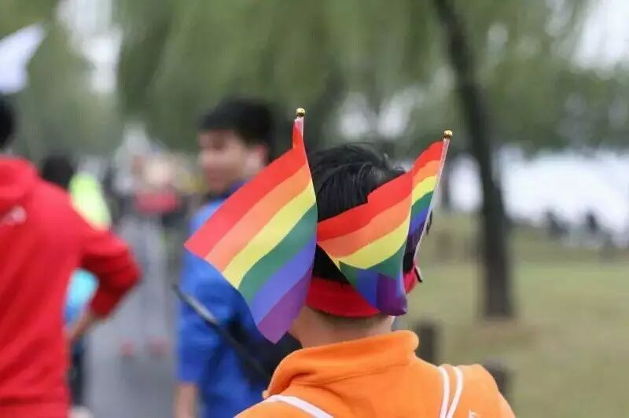

第二弹 | 酷儿论坛究竟是一个什么样的组织？
论坛存在的全部意义，绝非一个概念层面的答案所能涵盖。论坛是一个在倡导平等多元健康的旗帜下奋力谋求自我认同与社会认同的自由之野，也是无数在杭性少数人群所真实经历的岁月中的温柔一瞥。
今年八月，我们在知乎上发起“加入酷儿论坛是一种怎样的体验”这一讨论，有的答案铿锵有力，让人动容，有的娓娓道来，触及人心。在此，我们攫取了其中一些答案，共同重温论坛带给我们的无法替代的温情。

李葡萄：
这是一条很啰嗦的回答
答主还记得某个军训的晚上排练完校歌回寝，看到车库里贴着一海报，上面画着：“天下来同”，脑海里一下子蹦出了“同性恋”这三个字。心想，嘿，这帮人真有趣。
那个时候因为性取向的问题，再加上接触的信息并不多，答主活得有点点艰难，仿佛跌进了孤寂的深渊。是继续躲着呢还是说出来呢？真的不知道。所以当看到酷儿论坛招新的报名表的时候，答主还是纠结了很久，直到ddl的前几分钟才下定了决心。
之后就是面试。那天最大的感受就是：“天呐第一次看见那么多的活的同性恋！”不过看到老基佬们都带着亲切（大雾）的笑容，就莫名地感觉到了安心。过了面试，上了“贼船”。
然而，刚进论坛的时候，算上葡萄，志愿者中只有两名生理女性。（直到现在论坛还是女性偏少）
于是我就开始和基佬们一起工作。
不得不说，酷儿论坛和学校里的社团不太一样。没有所谓的“官僚主义”，但也不可避免地有些些松散。但是作为独立的草根的公益组织，没有稳定的资金来源，酷儿们过得很精彩。这帮的“不听话的”、“喜欢搞事情”的人给我带来了很多惊喜。
答主是和文文同时加入论坛的，所以他提到的活动我都或多或少有参与。
恩我负责了半年的倡导组的工作。参与了一部分教科书项目，小伙伴们的出色的行动力给我留下了很深的印象。对，我们是能够凭借自己的力量带来一些改变的。
除此之外，在酷儿论坛的一年给答主带来了很多财富。比方说答主试着接触了多元性别理论，懂得了什么是“平等”和“自由”，学着不那么狭隘地看世界；也因为接触到更多的公益人和他们的思想，也形成了自己的看法。更重要的是，我对自己有了深入的了解，也能更加坦然地面对那个真实的自我。
谢谢酷儿论坛这段经历我会永远珍惜
附一张图 XD


锄药：
没有酷儿论坛，就没有今天的我。
2011年底，我在直男室友的介绍下注册了酷儿论坛(MOTSS)，参加了圣诞趴活动。2012年开始加入管理团队，其后一年多内担任了豆瓣主页管理员、版主和副站长的职位。也许是MOTSS十余年站史上唯一一任副站长？
MOTSS给了我关于LGBT最初的较为系统的启蒙知识。我很小的时候就知道了自己的性向，自我认同也没经历过什么纠结挣扎，不过对这方面的认识之前一直出于一种朴素的自然状态。加入MOTSS以后，我在论坛的帖子和线下活动中学到了很多。
MOTSS让我改变了很多关于LGBT、性、少数群体、歧视等方面的观念。比如加入MOTSS以后，我知道了为什么不应该歧视“娘炮”，恋老，SM，异装癖等等少数群体中或许比“单纯”的同性恋更不符合社会期待的人群或行为，知道了为什么不应该说“什么什么人给我们LGBT的形象抹了黑”“应该把什么什么人踢出同性恋的队伍”这样的话，比如开始关注和支持女权，等等。
MOTSS帮助我向父母出了柜。在论坛，我除了学到了许多这方面的理论知识，也听到了许多前辈的出柜故事，学习了经验，于是开始紧锣密鼓计划起这件原本不知什么时候才敢做的事情，并很快付诸行动。那段时间简直难熬，要不是通过在MOTSS的学习让我有了充足的准备和计划，把可能发生的种种情形和应对方案都提前预想了，真不知道要怎样挺过来。
MOTSS让我知道，我们普通人也可以为这个群体做很多事情。那时我们做了很多和LGBT有关的公益活动，包括和学校团委各种斗法请来李银河等名人做讲座（这方面实在是对浙大很失望....相比起来浙工大、中国美院就要好得多，浙工大似乎还有这方面的课程邀请过我们管理团队的成员去串讲），在杭州各个高校校园内涂鸦、贴海报，城市里游行骑行，协办同性恋亲友会的同志父母恳谈会，与杭州市教科所的人员展开座谈会修改性教育教材中的不科学的歧视性内容，在接连两次和同性恋有关的命案后给全国知名的法学家致信提议在同性婚姻法律方面发声（当时收到过少数回应，最积极的一个其后竟很快去世了....），等等。
我的个人简历里，在MOTSS的做过的事情算是很华丽的一部分经历，出国申请写Diversity essay的时候也对这一部分大书特书。
MOTSS让我认识了许多可爱的人，加入了一个温暖有爱的LGBT社群，让我的大学生活有了灿烂的一段经历。那时网上流传了一个浙大的同性恋校友被出柜自杀的新闻，我们站长烟玉暖阳说，如果这位校友当初读大学时有MOTSS，或许就不会有这样的悲剧。我想是这样。如果有这么多可以交心的同伴，有这么多的经历可以让一个人完善自我认同，这样的悲剧不说避免，大概也能大大降低可能性。（那时好多人本来对出柜怕得要死，站长坚持室外的集体活动一定要举大彩虹旗，在校园内人来人往的地方就打起旗子集合，论坛会员们还是忍不住纷纷参加了，这样的室外版聚一般都是MOTSS人气最高的活动。想想这件事经常觉得有趣）
当然，还收获了两段爱情。
现在MOTSS的BBS已经关闭了，组织形式和我们那时大不一样。想当初，我们运营的时候，就有老人叹息他们过去的MOTSS不是我们那样的。现在又不同了，我倒觉得，这没什么。互联网的形势和国内的LGBT的生存状态都是快速变化的阶段，MOTSS当然也得与时俱进。重要的是，同样是一群LGBT大学生（也有少数社会人士和异性恋的友同人士）在线上线下组建起一个自己的社群，一起为这个群体乃至为整个社会做些事情，在其中欢笑和成长。

论坛的价值发诸人群，也必将回归人群，在个体的情感记忆中共眠共息是论坛持续存在14年的最大依凭，也是我们一直坚守的态度与信念。
纳新工作已经正式开启，欢迎有意愿加入论坛的热心小伙伴们扫码或点击阅读原文报名或者进群了解具体情况。

报名表

咨询群
点击“阅读原文”报名吧！~